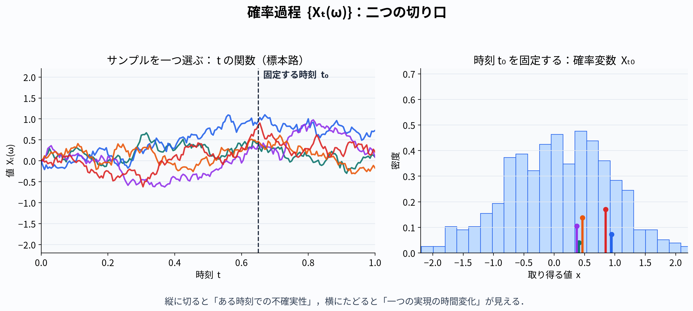
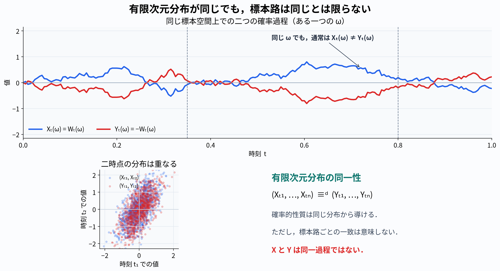

確率過程論の概要(1)
はじめに
確率過程とは，時間とともに不規則に変動する幻想を記述する数学ツールとして広く用いられているもので，確率変数が時間に依存するという考え方が基本となっている．
確率過程とは？
確率空間(\Omega, \mathcal F, P)が与えたれており，この上に定義された\mathbb R^n値確率変数の集まりを考える．各確率変数には実数のパラメータが付されており，このパラメータの値がとり得る集合は，\mathbb Rの部分集合T(すなわち時間)であるものとする．以下ではTを時間パラメータ集合と呼び，その要素を「時間」あるいは「時刻」といった名称で呼ぶ．このTを用いて確率過程を定義する．
定義：確率過程
時刻 t \in Tに依存する\mathbb R^n値確率変数の集まりX(\omega) = \{X_t(\omega);t \in T\}を確率過程とよぶ．
もちろんtを一つ固定するごとに，X_t : \Omega \to \mathbb R^nは\mathcal F可測となっていなければならない．
定義：見本関数（サンプルパス）
連続時間確率過程Xにおいて，\omegaを一つ固定すると，X(\omega)はT上の\mathbb R^n値関数となる．これを見本関数（サンプルパス）と呼ぶ．
確率過程の特性を理解するには，「時刻tを一つ固定すると確率変数となる」という特性と「サンプルを一つ抽出するとtの関数が得られる」という特性の両方から把握しなければならない．

左が関数としての確率過程．右が時間を固定て，確率変数の振る舞いをする確率過程である．
有限次元分布
実確率変数の場合は，確率分布関数を知ることができれば，それに関する確率的な性質や統計量を，原理的にはすべて産出できる．しかし，確率過程の場合は事情がかなり異なる．例えばある時刻を一つ固定すれば実確率変数が得られるが，その時刻の確率分布関数を知っただけでは不十分で，異なる時刻間の統計的相関も知らなければならない．さらに多数の時刻間での情報も必要である．
このため，確率過程の確率的性質は次のように表現しなければならない．\mathbb R値確率過程を例にとると，時間パラメータ空間上任意に与えた時系列t_1, t_2 , ...,t_n \in Tに対して，(X_{t_1}(\omega),..., X_{t_n}(\omega))は \mathbb R値確率変数を与える．その確率分布を確率過程Xのn次の有限次元分布と呼ぶ．有限次元分布という名称は，確率過程のサンプルが得られる空間（関数空間）が線形空間無限次元の空間であるのに対して，それを有限の次元の空間に射影して表現していることに由来している．
これは実確率変数の従う分布であるから，その結合確率分布関数 F^{(n)}_X (x_1,t_1 ; x_2,t_2 ; \cdots;x_n,t_n) = P(X_{t_1} \le x_1 , ...,X_{t_n} \le x_n) により表現することが可能である．これを，任意の次数，任意の時系列の選択に対して知ることが，確率過程の性質を完全に知る上では必要となるのである．しかしあらゆる確率過程に対してこのような知識を要請することは事実上困難であることは容易に想像がつく．したがって確率過程を用いて現象を解析するにはいくつかの限定された特性を有する確率過程に絞って議論を進めなければならない．後に述べるが，Markov過程という概念はこの目的のための非常に有力な性質となる．
有限次元分布による確率過程の特性の把握を考えることに関連して，有限次元分布の同一性と確率過程の同一性の違いをはっきりさせておかなければならない． ２つの確率過程の有限次元分布が同じでも，それが見本関数ごとに一致するとは限らない．しかし，実用的観点からは対象とする確率過程の有限次元分布を求めること，あるいはその部分的情報を用いることにより，必要な確率的性質を導出することが重要となるので，見本関数ごとの振る舞いの一致が必ずしも必要なわけではない．

ちなみにX = \{W_t;t \in T\}, Y = \{-W_t\in T\}である．たしかに正規分布は左右対称なので，正負を逆にしても確率的には同じになるけど，確率過程はt軸対称になるな．したがって，もしも見本関数ごとの振る舞いが数学的に都合の悪いものであれば，有限次元関数が同じでも見本関数ごとの挙動が解析上都合のよい確率過程を構成すればよいわけである． そのためも次の用語の意味を理解しておくことが重要となる．
定義：変形，判別不能
(i)確率過程Xに対して，確率過程Yが各t \in Tに対してX_t(\omega) = Y_t(\omega) , \quad (\text{a.s)} を満たすとき，YはXの変形であるという． (ii)２つの確率過程XとYが，P(X_t = Y_t, \forall t \in T) = 1を満たすとき，判別不能であるという．
これ一緒じゃねえの？almost surelyってそういう意味なんじゃないの？ 具体例を考える．T = [0,1], \Omega = [0,1]で分布は一様分布とする． X_t(\omega) = 0,\qquad Y_t(\omega) = \begin{cases} 1 & \omega = t\\ 0 & \omega \neq t \end{cases} X_t = Y_tとなるのは\omega \neq tである．これは\omega = tとなる点がtを固定したとき1つしかなく，区間の要素数は無限なので \forall t\in T ,\quad P(X_t = Y_t) = 1 である．なのでAlmost surelyの定義から，YはXの変形である．
しかし「全てのtで一致する\omega」は一つもない．なぜなら各tについて，X_t \neq Y_tを満たす\omegaが必ず一つだけ存在するからである．すなわち P(X_t = Y_t , \quad \forall t \in[0,1]) = 0 となっているので，判別不能ではない． - 変形：各時刻ごとに見ればa.s.一致 - 判別不能：a.s. の標本経路について全時刻で一致
実用面の応用という点では，変形という操作により得られる確率過程は，元の確率過程と同じものと考えて差し支えない．
確率過程の連続性
[[学習/Zawa25721_documents/Published/StochasticDifferentialEquations/2|2]]で定義した収束を用いて確率過程の連続性を定義する．
定義：a.s.連続，確率連続，q次平均連続
- 各t \in Tに対して，\text{as-}\lim_{s \to t} X_s = X_tとなるとき，Xはa.s.連続であるという． ii)各t \in Tに対して，\text{p-}\lim_{s \to t} X_s = X_tとなるとき，Xは確率連続であるという． iii)各t \in Tに対して，X_tはL^qに属するものとする．このとき各t\in Tに対して\lim_{s \to t} \mathbb E[|X_s - X_t|^q] = 0 となるとき，Xはq次平均連続であるという．
サンプル\omegaを抽出するごとにどのような見本関数が出現するかという観点からは次のような定義が与えられる．
定義：連続確率過程
Xの見本関数がほとんど確実にT上の\mathbb R^n値連続関数となるとき，Xを連続確率過程という．連続確率過程の集まりを\mathcal Cと表す．
見本関数が連続でない場合も考えるので，次の定義も与えておく．
定義：cadlag確率過程，caglad確率過程
i)X の見本関数が，T上の\mathbb R^n値関数として，ほとんど確実に右連続で左極限をもつとき，Xをcadlag確率過程という．
ii)X の見本関数が，T上の\mathbb R^n値関数として，ほとんど確実に左連続で右極限をもつとき，Xをcaglad確率過程という．
確率過程の列の収束性
関数に対して関数列があるように，確率過程に対しても確率過程の列があり，それに対する収束性を考えなければならない．時間パラメータtを固定して話を進めれば，それは確率変数列の収束の問題に帰着されるが，それでは確率過程の挙動全体という観点からの議論として十分であるとは言えない．なぜならtを固定した議論ではその時刻での値しか見れないので，確率過程の本質でらう時間方向の繋がりを捨ててしまうからである．
そこでサンプルを取り出すごとに実数が得られるのが実確率変数であるという認識からの類推のより，サンプルとして関数が得られるのが確率過程であるという考え方に着目する．
この場合，標本空間からの写像先が実数空間ではなくなるため，[[学習/Zawa25721_documents/Published/StochasticDifferentialEquations/1|1]]で述べた位相確率変数という概念が必要になる（意味ないと思っていたが，ここで使われるのか！）．したがってサンプルの抽出により得られる関数が属する集合，いわゆる関数空間について，その位相的性質を確率して置かなければならない．
もっとも基本となる連続確率過程について考えてみる．この場合の標本空間\Omegaからの写像先は，時間パラメータ集合T上定義された連続関数からなる関数空間となる．T上定義された\mathbb R^n値連続関数の全体を\mathcal Cと表すことにする．時間上限T_{\max}が有限値の場合，\mathcal Cの２つの要素x,yの距離を d(x,y) = \sup_{t \in [0,T_{\max}]} |x(t) - y(t)| で定義することにより，空間\mathcal Cの位相（近さの度合い，収束など）が決まる． Cの要素の列\{ x_n \}がこの距離でx \in \mathcal Cに収束するとは，関数列\{x_n\}が区間[0,T_{\max}]上でxに一様収束することと同値である．このことから，このように定まる\mathcal Cの位相を一様収束位相とよぶ （T_{\max} = \inftyの場合は修正が必要であるが，ここではそんなに厳密に考えないので記述しない）．
この位相の下で定まる\mathcal Cの開部分集合に基づいて，\mathcal Cの位相的Borel加法族\mathcal B(\mathcal C)が定まり， \mathcal C値位相確率変数X : \Omega \to \mathcal Cが\mathcal B(\mathcal C)可測な写像として定義される．
Xが連続確率過程であることと，\mathcal C値位相確率変数であることは同値であることが知られている．このように，確率過程を関数空間の値をとる位相確率変数と捉えることは重要である．
連続確率過程を\mathcal C値位相確率変数とみなすと，連続確率変数の列の収束性は，先程定義した距離によって記述される．実確率変数列の収束性について，様々な収束の概念があるように，距離dに関してもこれらの収束規範がある．
時間上限T_{\max} = \inftyの場合は，各t < \inftyを固定するごとに，時間パラメータ集合を[0,t]という有界閉集合に限定することにより，一様収束位相下での確率収束を考えれば多くの実用的な問題に対応できる．そして次の定義を与える
定義：ucpの意味で収束
t \in Tを固定するごとに，任意の\epsilon > 0に対して \lim_{n \to \infty} P\left( \sup_{s \in[0,t]} |X_s^{(s)} - X_s| \ge \epsilon\right) = 0 となるとき，X^{(n)}はXにucpの意味で収束するという．
混乱が無い場合は \text{p}-\lim_{n\to \infty} X^{(n)} = X と表記することにする．